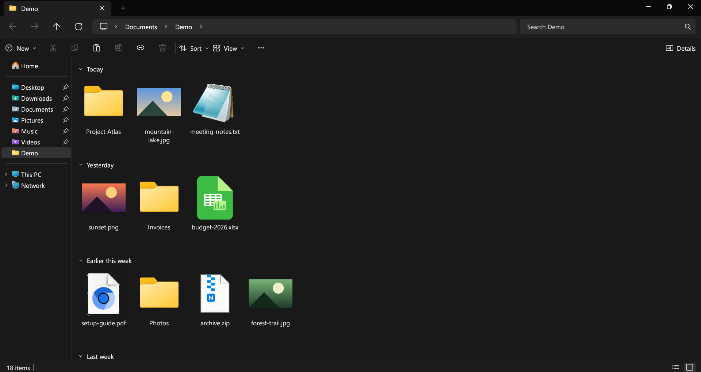
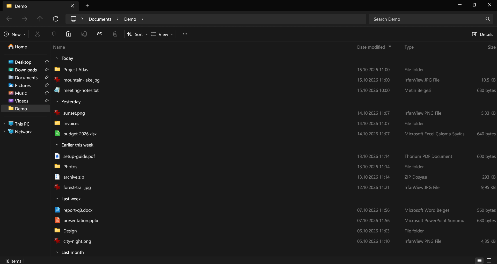
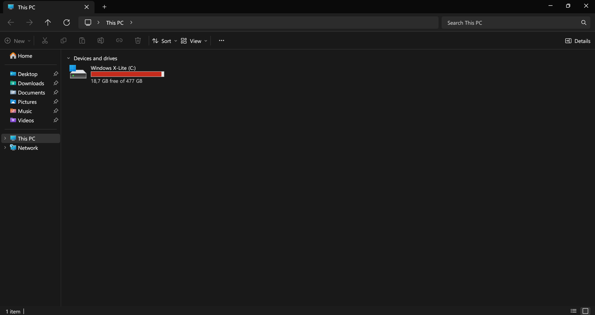
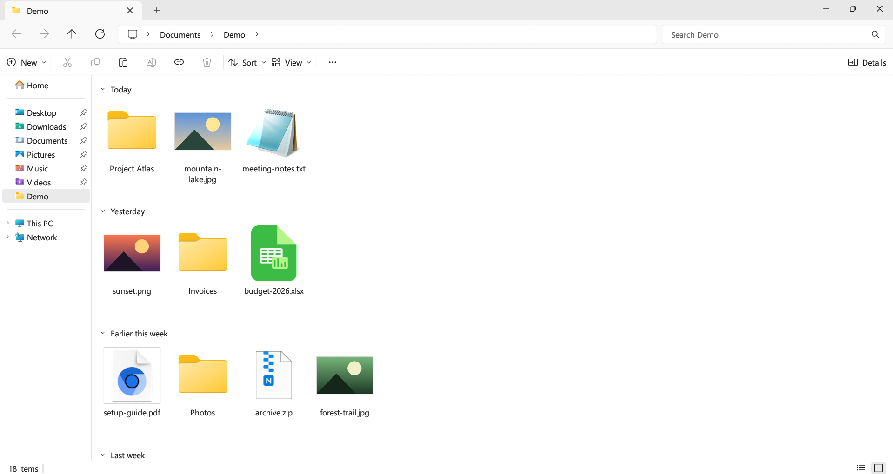

Swift Explorer
A file manager that looks and works like the Windows 11 File Explorer. Large folders open without freezing the window, and search runs across subfolders in parallel. Free, open source, one exe.

Same Explorer, less waiting
- Tabs in the title bar, breadcrumb address bar, command bar, navigation pane, Home and This PC, as in Windows 11.
- Every File Explorer keyboard shortcut works the same way. F1 lists them.
- Folders are read on background threads, so a folder with tens of thousands of files doesn't lock up the window.
- Typing in the search box filters the folder instantly; Enter searches all subfolders, with
*and?wildcards. - Shift + right-click opens the full Windows context menu, so 7-Zip, WinRAR and Send to are there.
- Ctrl+Z undoes renames, moves, copies and deletes.
- Copy, paste and drag and drop work both ways with File Explorer and the desktop.
- Type
cmd,powershellorterminalin the address bar to open a terminal in the current folder. - English, Türkçe, Deutsch, Español, Français, Português (Brasil), Русский, 简体中文 and 日本語.



Install
Download SwiftExplorer.exe and run it; there is no installer. Or use Scoop:
scoop bucket add misutesu https://github.com/misutesu-desu/scoop-bucket
scoop install swift-explorerOn Linux:
curl -fsSL https://raw.githubusercontent.com/misutesu-desu/swift-explorer/main/install.sh | sh